Przydatne linki
Układ okresowy pierwiastków Wykaż, że 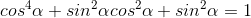.
Wykaż, że 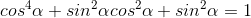.- Kąt
 jest kątem ostrym i
jest kątem ostrym i  . Wykaż, że
. Wykaż, że  .
. - Kąt jest kątem ostrym i
 . Wykaż, że
. Wykaż, że  .
. -
 Wykaż, że 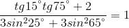.
Wykaż, że 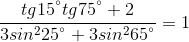. - Wykaż, że 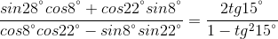.
- Wykaż, że
 .
. - Podaj odpowiednie założenia i sprawdź, czy tożsamością jest równość
 .
. - Wykaż, że dla każdego , takiego, że 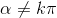, gdzie
 , równanie 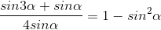 jest prawdziwe.
, równanie 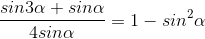 jest prawdziwe. - Wykaż, że dla dowolnego kąta prawdziwa jest tożsamość 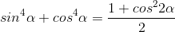.
- Udowodnij, że dla kąta 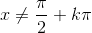, gdzie , prawdziwa jest tożsamość 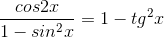.
- Wykaż, że 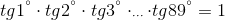.
- Wiedząc, że
 , wykaż, że
, wykaż, że  .
. - Wykaż, że
 .
. - Kąt jest kątem ostrym i 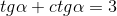. Wykaż, że
 .
. - Kąt jest kątem ostrym i
 . Wykaż, że
. Wykaż, że  .
. - Wiedząc, że 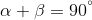, wykaż, że
 .
. - Wykaż, że 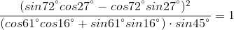.
- Wykaż, że
 .
. - Podaj odpowiednie założenia i sprawdź, czy tożsamością jest równość 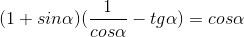.
- Wykaż, że dla każdego kąta , takiego, że
 , gdzie , równanie 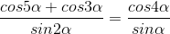 jest prawdziwe.
, gdzie , równanie 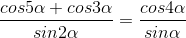 jest prawdziwe. - Wykaż, że dla dowolnego kąta prawdziwa jest tożsamość
 .
. - Wykaż, że 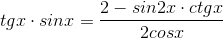 dla
 , gdzie .
, gdzie . - Wykaż, że 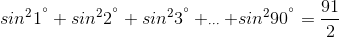.
- Wiedząc, że 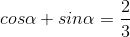, wykaż, że
 .
.
Zadania powtórzeniowe